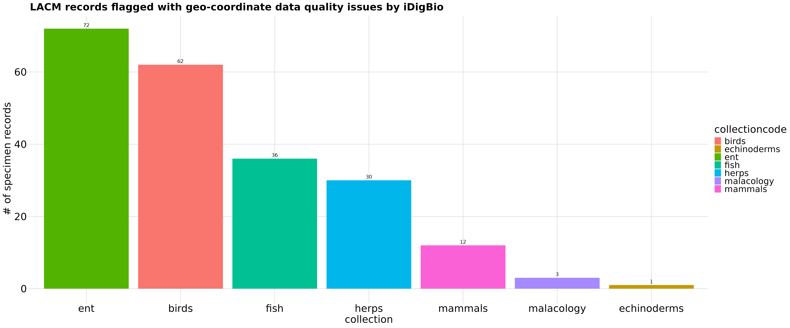
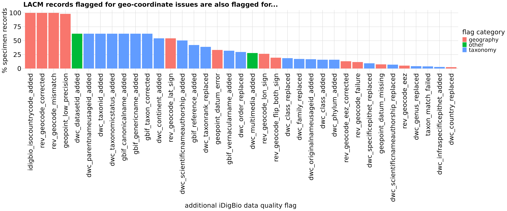

Code here written by Erica Krimmel. Code here is modified from original given in a presentation at the 2019 ADBC Summit in Gainesville, FL.
General Overview
Here we explore a situation where geographic coordinate data from the provider was modified by iDigBio during its data quality assurance process. See here for more information about iDigBio’s data quality flags.
In this demo we will cover how to:
- Write a query to search for specimens using
idig_search_records - Identify and map suspicious coordinates
Write a query to search for specimen records
First, let’s find all the specimen records for the data quality flag
we are interested in. Do this using the idig_search_records
function from the ridigbio package. You can learn more
about this function from the iDigBio API
documentation and ridigbio
documentation. In this example, we want to start by searching for
specimens flagged with “rev_geocode_corrected.”
# Edit the fields (e.g. `flags`) and values (e.g. "rev_geocode_corrected") in
# `list()` to adjust your query and the fields (e.g. `uuid`) in `fields` to
# adjust the columns returned in your results
df_flagCoord <- idig_search_records(rq = list(flags = "rev_geocode_corrected",
institutioncode = "lacm"),
fields = c("uuid",
"institutioncode",
"collectioncode",
"country",
"data.dwc:country",
"stateprovince",
"county",
"locality",
"geopoint",
"data.dwc:decimalLongitude",
"data.dwc:decimalLatitude",
"flags"),
limit = 100000) %>%
# Rename fields to more easily reflect their provenance (either from the
# data provider directly or modified by the data aggregator)
rename(provider_lon = `data.dwc:decimalLongitude`,
provider_lat = `data.dwc:decimalLatitude`,
provider_country = `data.dwc:country`,
aggregator_lon = `geopoint.lon`,
aggregator_lat = `geopoint.lat`,
aggregator_country = country,
aggregator_stateprovince = stateprovince,
aggregator_county = county,
aggregator_locality = locality) %>%
# Reorder columns for easier viewing
select(uuid, institutioncode, collectioncode, provider_lat, aggregator_lat,
provider_lon, aggregator_lon, provider_country, aggregator_country,
aggregator_stateprovince, aggregator_county, aggregator_locality,
flags)Here is what our query result data looks like:
| uuid | institutioncode | collectioncode | provider_lat | aggregator_lat | provider_lon | aggregator_lon | provider_country | aggregator_country | aggregator_stateprovince | aggregator_county | aggregator_locality |
|---|---|---|---|---|---|---|---|---|---|---|---|
| 02a5f38f-cd94-4b9c-af7d-260922884712 | lacm | herps | -26.8 | -20.8833333 | 20.88333333 | 26.80000 | Botswana | botswana | NA | NA | 7 mi n, 12 mi e jct., molopo-nossob rivers |
| 03965834-16f2-45f1-bf63-8d5975e9c218 | lacm | herps | -26.8 | -20.8833333 | 20.88333333 | 26.80000 | Botswana | botswana | NA | NA | 7 mi n, 12 mi e jct., molopo-nossob rivers |
| 04af5298-a987-474e-991c-c333c873c7e6 | lacm | ent | 1.07 | -1.0700000 | -69.52 | -69.52000 | Colombia | colombia | vaupes | NA | est. biol. mosiro-itajura (caparu), terrazas |
| 050dde64-2647-4e70-9a46-417ebe968410 | lacm | birds | 1.13 | -1.1300000 | 34.55 | 34.55000 | KENYA | kenya | western prov | bungoma dist | mt elgon, se |
| 052373a4-68cd-4dcc-8ed3-6a66b8a58fef | lacm | ent | 1.07 | -1.0700000 | -69.52 | -69.52000 | Colombia | colombia | vaupes | NA | est. biol. mosiro-itajura (caparu), terrazas |
| 06a8595e-5d1d-4e33-a7f8-0b48e2d7b78c | lacm | ent | 1.07 | -1.0700000 | -69.52 | -69.52000 | Colombia | colombia | vaupes | NA | est. biol. mosiro-itajura (caparu), terrazas |
| 094069c2-ea4d-4003-86a0-17312bd169b9 | lacm | birds | 33.61238 | 33.6123800 | 116.4298 | -116.42980 | UNITED STATES | united states | california | riverside co | carrizo rd; santa rosa mt vic |
| 0a857a04-8f52-4a23-af22-a3251e1e6e80 | lacm | ent | -4.13 | 4.1300000 | -69.90 | -69.90000 | Colombia | colombia | amazonas | NA | 7 km w leticia |
| 0bba0f38-10ba-43a4-a20a-94a2d2f373aa | lacm | ent | -4.13 | 4.1300000 | -69.90 | -69.90000 | Colombia | colombia | amazonas | NA | 7 km w leticia |
| 0cd78aa7-4b3d-4c59-9405-0ac20d6ed073 | lacm | herps | -26.8 | -20.8833333 | 20.88333333 | 26.80000 | Botswana | botswana | NA | NA | 7 mi n, 12 mi e jct., molopo-nossob rivers |
| 0fccffb0-c34c-4572-a28a-abecc9de4ac6 | lacm | herps | -26.8 | -20.0883333 | 20.08833333 | 26.80000 | Botswana | botswana | NA | NA | 7 mi n, 12 mi e junct. maloopoo-nossob rivers |
| 0ffae23c-59b6-4b4c-8cf5-89ad6edace6a | lacm | mammals | -26.02778 | -32.9044400 | 32.90444 | 26.02778 | South Africa | south africa | NA | NA | inhaca marine sta. |
| 0ffcdac3-a4d5-415f-8a8d-0a7ba16c4f46 | lacm | fish | -46.66666666666 | -46.6666667 | -170.05 | 170.05000 | New Zealand | new zealand | NA | NA | east of new zealand |
| 137cfaf8-dab4-43b8-b2d1-4b0f5ab811a6 | lacm | herps | -26.8 | -20.8833333 | 20.88333333 | 26.80000 | Botswana | botswana | NA | NA | 7 mi n, 12 mi e jct., molopo-nossob rivers |
| 14fcacfa-ebfc-4840-b865-2796ff6a5555 | lacm | fish | -46.66666666666 | -46.6666667 | -170.05 | 170.05000 | New Zealand | new zealand | NA | NA | east of new zealand |
| 18ee02eb-35a4-46a8-86fc-316e8242efa7 | lacm | ent | 1.07 | -1.0700000 | -69.52 | -69.52000 | Colombia | colombia | vaupes | NA | est. biol. mosiro-itajura (caparu), terrazas |
| 1bd5ca7b-7462-4ab7-9fc4-bda91284498c | lacm | birds | 1.13 | -1.1300000 | 34.55 | 34.55000 | KENYA | kenya | western prov | bungoma dist | mt elgon, s e |
| 1c2f3837-0371-4a33-a435-a8789ae36921 | lacm | ent | -4.13 | 4.1300000 | -69.90 | -69.90000 | Colombia | colombia | amazonas | NA | 7 km w leticia |
| 2013704d-9ad1-4975-a3e5-af0783e41408 | lacm | herps | -26.8 | -20.8833333 | 20.88333333 | 26.80000 | Botswana | botswana | NA | NA | 7 mi n, 12 mi e jct., molopo-nossob rivers |
| 21f91d78-e9c2-4148-abb7-f67956c5eab9 | lacm | ent | 1.07 | -1.0700000 | -69.52 | -69.52000 | Colombia | colombia | vaupes | NA | est. biol. mosiro-itajura (caparu), terrazas |
| 232204b8-41e5-4e32-b1a7-16bb291f54ce | lacm | fish | -1 | 1.0000000 | 33 | 33.00000 | Uganda | uganda | NA | NA | minziro area; sango bay, lake victoria |
| 2601c9da-916a-4f69-8e02-ccf9a0fe1781 | lacm | ent | -4.13 | 4.1300000 | -69.90 | -69.90000 | Colombia | colombia | amazonas | NA | 7 km w leticia |
| 26029e26-190c-4c66-93ac-9c3d10698933 | lacm | herps | -26.8 | -20.8833333 | 20.88333333 | 26.80000 | Botswana | botswana | NA | NA | 7 mi n, 12 mi e jct., molopo-nossob rivers |
| 29eb7f29-d71c-4416-87bc-6b499cc19bd3 | lacm | fish | -46.66666666666 | -46.6666667 | -170.05 | 170.05000 | New Zealand | new zealand | NA | NA | east of new zealand |
| 2aa91566-c7ed-4256-9fcb-e6f7a9a1ca4f | lacm | ent | -4.13 | 4.1300000 | -69.90 | -69.90000 | Colombia | colombia | amazonas | NA | 7 km w leticia |
| 2b1321a1-e453-4163-acc4-19cf7962fe64 | lacm | herps | -26.8 | -20.8833333 | 20.88333333 | 26.80000 | Botswana | botswana | NA | NA | 7 mi n, 12 mi e jct., molopo-nossob rivers |
| 2b9611dc-0677-4205-8e2f-023c97159457 | lacm | ent | -4.13 | 4.1300000 | -69.90 | -69.90000 | Colombia | colombia | amazonas | NA | 7 km w leticia |
| 2bcc0f15-621a-42a3-a5d4-74a639cda643 | lacm | fish | 0.7983333333333 | -0.7983333 | -86.15361111111 | -86.15361 | Ecuador | ecuador | NA | NA | galapagos rift zone, hydrothermal vent (mussel bed) |
| 2d032f5c-bc9d-42b9-b84e-cef909304bbf | lacm | ent | 1.07 | -1.0700000 | -69.52 | -69.52000 | Colombia | colombia | vaupes | NA | est. biol. mosiro-itajura (caparu), terrazas |
| 2d44e945-5411-47ea-a1c3-7a4648bb3bf7 | lacm | fish | 1.9833333333333 | -1.9833333 | -84.25 | -84.25000 | Ecuador | ecuador | NA | NA | off ecuador |
| 2f0db601-24c9-4814-b08f-48e75a770647 | lacm | fish | -1 | 1.0000000 | 33 | 33.00000 | Uganda | uganda | NA | NA | minziro area; sango bay, lake victoria |
| 3273d73e-394a-435c-8863-2bdffbff4a54 | lacm | fish | -1 | 1.0000000 | 33 | 33.00000 | Uganda | uganda | NA | NA | minziro area; sango bay, lake victoria |
| 339c12de-2c83-470f-819b-281ee93c5a08 | lacm | ent | -4.13 | 4.1300000 | -69.90 | -69.90000 | Colombia | colombia | amazonas | NA | 7 km w leticia |
| 33a4537d-2f9e-4cb6-bc53-e5905ef4df93 | lacm | herps | 34.148476 | 34.1484760 | 118.281825 | -118.28182 | USA | united states | california | los angeles | autry museum of the american west, entry plaza (found dead), griffith park |
| 33c29345-ff7f-4952-9152-4c24f5fc25ea | lacm | fish | -46.66666666666 | -46.6666667 | -170.05 | 170.05000 | New Zealand | new zealand | NA | NA | east of new zealand |
| 342fb17d-685a-4cd2-8ca3-dae36e83f649 | lacm | mammals | -26.02778 | -32.9044400 | 32.90444 | 26.02778 | South Africa | south africa | NA | NA | inhaca marine sta. |
| 34ce1af0-31dd-4b87-9b3e-00505ff87801 | lacm | ent | -4.13 | 4.1300000 | -69.90 | -69.90000 | Colombia | colombia | amazonas | NA | 7 km w leticia |
| 3a138c50-2f89-4387-a74d-f6ecf85701f6 | lacm | birds | 32.33340 | 32.3334000 | 110.92820 | -110.92820 | UNITED STATES | united states | arizona | pima co | 2900 block e manzanita ridge pl; north tucson |
| 3af09e5c-20be-4cee-ae5a-168b9671f86c | lacm | birds | 32.33340 | 32.3334000 | 110.92820 | -110.92820 | UNITED STATES | united states | arizona | pima co | 2900 block e manzanita ridge pl; north tucson |
| 3b9b6115-1240-4f61-9c35-08868bbd4bea | lacm | fish | 1.9833333333333 | -1.9833333 | -84.25 | -84.25000 | Ecuador | ecuador | NA | NA | off ecuador |
| 3c41837e-ee5e-4746-96a3-b5ab4afa8401 | lacm | ent | -4.13 | 4.1300000 | -69.90 | -69.90000 | Colombia | colombia | amazonas | NA | 7 km w leticia |
| 3eea998e-041d-4474-a4ce-ef012cbfe15a | lacm | ent | 1.07 | -1.0700000 | -69.52 | -69.52000 | Colombia | colombia | vaupes | NA | est. biol. mosiro-itajura (caparu), terrazas |
| 403c732d-b497-403d-b8a2-07e9b6af7f3e | lacm | fish | 2.15 | -2.1500000 | -79.15 | -79.15000 | Ecuador | ecuador | NA | NA | ecuador and vicinity, tumoro bank |
| 41bb848f-15a1-45e6-970e-16697a8ff8d5 | lacm | ent | -4.13 | 4.1300000 | -69.90 | -69.90000 | Colombia | colombia | amazonas | NA | 7 km w leticia |
| 4551f993-bced-456e-9c44-f31f115c80c0 | lacm | herps | -26.8 | -20.8833333 | 20.88333333 | 26.80000 | Botswana | botswana | NA | NA | 7 mi n, 12 mi e jct., molopo-nossob rivers |
| 46216711-da11-45ab-8185-1720d773619f | lacm | fish | -46.66666666666 | -46.6666667 | -170.05 | 170.05000 | New Zealand | new zealand | NA | NA | east of new zealand |
| 478fa5a1-04db-45d6-95a6-40dc715f9f67 | lacm | malacology | 58.7900 | 52.9600000 | -52.9600 | -58.79000 | Canada | canada | newfoundland & labrador | NA | labrador sea, ne of |
| 48a5cd6c-b20a-464c-92b7-85a6877e9f90 | lacm | ent | -4.19 | 4.1900000 | -69.93 | -69.93000 | Colombia | colombia | amazonas | NA | leticia, imani station |
| 49169dce-0a10-4f26-a93f-a43ad3528e23 | lacm | fish | 1.9833333333333 | -1.9833333 | -84.25 | -84.25000 | Ecuador | ecuador | NA | NA | off ecuador |
| 4ac9fdcb-4a1a-46d2-9afb-c202c87d53f3 | lacm | herps | -26.8 | -20.8833333 | 20.88333333 | 26.80000 | Botswana | botswana | NA | NA | 7 mi n, 12 mi e jct., molopo-nossob rivers |
Visualize suspicious coordinates
One example of a geographic coordinate data quality issue would be that the latitude/longitude has a reversed sign, e.g. the data provider gave the value latitude = “7.1789” but meant latitude = “-7.1789.” In the map below we can see a few examples of specimen records published to iDigBio where this is the case. These data have been adjusted by iDigBio and this action is recorded with the data quality flag “rev_geocode_flip_lat_sign.”
# Create function to allow subsetting the `df_flagCoord` dataset by other flags
# found on these same records
df_flagSubset <- function(subsetFlag) {
df_flagCoord %>%
filter(grepl(subsetFlag, flags)) %>%
select(uuid, matches("_lat|_lon")) %>%
unite(provider_coords, c("provider_lat", "provider_lon"), sep = ",") %>%
unite(aggregator_coords, c("aggregator_lat", "aggregator_lon"), sep = ",") %>%
gather(key = type, value = coordinates, -uuid) %>%
separate(coordinates, c("lat","lon"), sep = ",") %>%
mutate(lat = as.numeric(lat)) %>%
mutate(lon = as.numeric(lon)) %>%
arrange(uuid, type)}
# Subset `df_flagCoord` by records flagged for having had their latitude negated
# to place point in stated country by reverse geocoding process
df_rev_geocode_lat_sign <- df_flagSubset("rev_geocode_lat_sign")
# Create map displaying a few examples of records with the
# rev_geocode_flip_lat_sign flag
pal <- leaflet::colorFactor(palette = c("#d7191c", "#fdae61", "#ffffbf", "#abdda4", "#2b83ba"),
domain = df_rev_geocode_lat_sign$uuid[1:10])
map <- df_rev_geocode_lat_sign[1:10,] %>%
mutate(popup = str_c(type, " = ", lat, ", ", lon, sep = "")) %>%
leaflet() %>%
addTiles() %>%
addCircleMarkers(
lng = ~lon,
lat = ~lat,
radius = 10,
weight = 1,
color = ~pal(uuid),
stroke = FALSE,
fillOpacity = 100,
popup = ~popup) %>%
addLegend("bottomright", pal = pal, values = ~uuid,
title = "Specimen Records",
opacity = 1)We can visualize this data on a map to better understand what the data quality flag is telling us. For example, in the map below you can see the effect of accidentally reversing the latitude on three example georeferenced specimen records.
Summarize and explore data
The iDigBio API provides a means for an institution to examine data quality issues across collections, which sometimes is not possible internally when data in different collections are managed in different databases.
# Summarize flagged records by collection type
spmByColl <- df_flagCoord %>%
group_by(collectioncode) %>%
tally()
# Generate graph to display counts of flagged records by collection within the
# institution
graph_spmByColl <- ggplot(spmByColl,
aes(x = reorder(collectioncode, -n),
y = n,
fill = collectioncode)) +
geom_col() +
theme(panel.background = element_blank(),
legend.title = element_blank(),
axis.title.x = element_text(face = "bold"),
axis.text.y = element_blank(),
axis.ticks.y = element_blank(),
axis.title.y = element_text(face = "bold"),
plot.title = element_text(size = 12, face = "bold")) +
labs(x = "collection",
y = "# of specimen records",
title = "LACM records flagged with geo-coordinate data quality issues by iDigBio") +
geom_text(aes(label = n, vjust = -0.5))
# Get count of total records published by the institution using function
# `idig_count_records`
totalInstSpm <- idig_count_records(rq = list(institutioncode = "lacm"))
# Calculate flagged records as percent of total records
percentFlagged <- sum(spmByColl$n)/totalInstSpm*100For example, we can ask how many specimen records from which collections at the Natural History Museum of Los Angeles (LACM) have been flagged as “rev_geocode_corrected” by iDigBio. As an aside, although this graph highlights the number of specimen records with data quality issues, these represent only:
## [1] "0.01%"of the total specimen records published by LACM.

We can also explore what other data quality flags these specimen records have been flagged with.
# Collate `df_flagAssoc` to describe other data quality flags that are associated
# with rev_geocode_corrected in `df_flagCoord`
df_flagAssoc <- df_flagCoord %>%
select(uuid, flags) %>%
unnest(flags) %>%
group_by(flags) %>%
tally() %>%
mutate("category" = case_when(str_detect(flags, "geo|country|state")
~ "geography",
str_detect(flags, "dwc_datasetid_added|dwc_multimedia_added|datecollected_bounds")
~ "other",
str_detect(flags, "gbif|dwc|tax")
~ "taxonomy")) %>%
mutate("percent" = n/(nrow(df_flagCoord))*100) %>%
arrange(category, desc(n))
# Visualize associated data quality flags
graph_spmByColl <- ggplot(df_flagAssoc, aes(x = reorder(flags, -percent), y = percent, fill = category)) +
geom_col() +
theme(axis.title.x = element_text(face = "bold"),
axis.text.x = element_text(angle = 75, hjust = 1),
axis.ticks.y = element_blank(),
axis.title.y = element_text(face = "bold"),
plot.title = element_text(size = 12, face = "bold")
) +
labs(x = "additional iDigBio data quality flag",
y = "% specimen records",
title = "LACM records flagged for geo-coordinate issues are also flagged for...",
fill = "flag category")